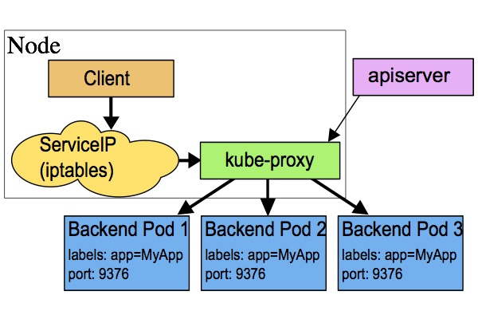

Service
Kubernetes Pod 是有生命周期的，它们可以被创建，也可以被销毁，然而一旦被销毁生命就永远结束。
通过 ReplicationController 能够动态地创建和销毁 Pod。 每个 Pod 都会获取它自己的 IP 地址，即使这些 IP 地址不总是稳定可依赖的。这会导致一个问题：在 Kubernetes 集群中，如果一组 Pod（称为 backend）为其它 Pod （称为 frontend）提供服务，那么那些 frontend 该如何发现，并连接到这组 Pod 中的哪些 backend 呢？
关于 Service
Kubernetes Service 定义了这样一种抽象：一个 Pod 的逻辑分组，一种可以访问它们的策略 —— 通常称为微服务。这一组 Pod 能够被 Service 访问到，通常是通过 Label Selector（查看下面了解，为什么可能需要没有 selector 的 Service）实现的。
举个例子，考虑一个图片处理 backend，它运行了3个副本。这些副本是可互换的 —— frontend 不需要关心它们调用了哪个 backend 副本。然而组成这一组 backend 程序的 Pod 实际上可能会发生变化，frontend 客户端不应该也没必要知道，而且也不需要跟踪这一组 backend 的状态。Service 定义的抽象能够解耦这种关联。
对 Kubernetes 集群中的应用，Kubernetes 提供了简单的 Endpoints API，只要 Service 中的一组 Pod 发生变更，应用程序就会被更新。对非 Kubernetes 集群中的应用，Kubernetes 提供了基于 VIP 的网桥的方式访问 Service，再由 Service 重定向到 backend Pod。
定义 Service
一个 Service 在 Kubernetes 中是一个 REST 对象，和 Pod 类似。
像所有的 REST 对象一样， Service 定义可以基于 POST 方式，请求 apiserver 创建新的实例。
例如，假定有一组 Pod，它们对外暴露了 9376 端口，同时还被打上 "app=MyApp" 标签。
kind: Service
apiVersion: v1
metadata:
name: my-service
spec:
selector:
app: MyApp
ports:
- protocol: TCP
port: 80
targetPort: 9376
上述配置将创建一个名称为 “my-service” 的 Service 对象，它会将请求代理到使用 TCP 端口 9376，并且具有标签 "app=MyApp" 的 Pod 上。这个 Service 将被指派一个 IP 地址（通常称为 “Cluster IP”），它会被服务的代理使用（见下面）。该 Service 的 selector 将会持续评估，处理结果将被 POST 到一个名称为 “my-service” 的 Endpoints 对象上。
需要注意的是， Service 能够将一个接收端口映射到任意的 targetPort。默认情况下，targetPort 将被设置为与 port 字段相同的值。更有趣的是，targetPort 可以是一个字符串，引用了 backend Pod 的一个端口的名称。但是，实际指派给该端口名称的端口号，在每个 backend Pod 中可能并不相同。对于部署和设计 Service ，这种方式会提供更大的灵活性。例如，可以在 backend 软件下一个版本中，修改 Pod 暴露的端口，并不会中断客户端的调用。
Kubernetes Service 支持 TCP 和 UDP 协议，默认 TCP 协议。
没有 selector 的 Service
Service 抽象了该如何访问 Kubernetes Pod，但也能够抽象其它类型的 backend，例如：
- 希望在生产环境中使用外部的数据库集群，但测试环境使用自己的数据库。
- 希望服务指向另一个
Namespace中或其它集群中的服务。 - 正在将工作负载转移到 Kubernetes 集群，和运行在 Kubernetes 集群之外的 backend。
在任何这些场景中，都能够定义没有 selector 的 Service ：
kind: Service
apiVersion: v1
metadata:
name: my-service
spec:
ports:
- protocol: TCP
port: 80
targetPort: 9376
由于这个 Service 没有 selector，就不会创建相关的 Endpoints 对象。可以手动将 Service 映射到指定的 Endpoints：
kind: Endpoints
apiVersion: v1
metadata:
name: my-service
subsets:
- addresses:
- ip: 1.2.3.4
ports:
- port: 9376
注意：Endpoint IP 地址不能是 loopback（127.0.0.0/8）、 link-local（169.254.0.0/16）、或者 link-local 多播（224.0.0.0/24）。
访问没有 selector 的 Service，与有 selector 的 Service 的原理相同。请求将被路由到用户定义的 Endpoint（该示例中为 1.2.3.4:9376）。
ExternalName Service 是 Service 的特例，它没有 selector，也没有定义任何的端口和 Endpoint。相反地，对于运行在集群外部的服务，它通过返回该外部服务的别名这种方式来提供服务。
kind: Service
apiVersion: v1
metadata:
name: my-service
namespace: prod
spec:
type: ExternalName
externalName: my.database.example.com
当查询主机 my-service.prod.svc.CLUSTER时，集群的 DNS 服务将返回一个值为 my.database.example.com 的 CNAME 记录。访问这个服务的工作方式与其它的相同，唯一不同的是重定向发生在 DNS 层，而且不会进行代理或转发。如果后续决定要将数据库迁移到 Kubernetes 集群中，可以启动对应的 Pod，增加合适的 Selector 或 Endpoint，修改 Service 的 type。
VIP 和 Service 代理
在 Kubernetes 集群中，每个 Node 运行一个 kube-proxy 进程。kube-proxy 负责为 Service 实现了一种 VIP（虚拟 IP）的形式，而不是 ExternalName 的形式。
在 Kubernetes v1.0 版本，代理完全在 userspace，Service 是 “4层”（TCP/UDP over IP）概念。
在 Kubernetes v1.1 版本，新增了 iptables 代理，但并不是默认的运行模式。新增了 Ingress API（beta 版），用来表示 “7层”（HTTP）服务。
从 Kubernetes v1.2 起，默认就是 iptables 代理。
在 Kubernetes v1.8.0-beta.0 中，添加了ipvs代理。
userspace 代理模式
这种模式，kube-proxy 会监视 Kubernetes master 对 Service 对象和 Endpoints 对象的添加和移除。
对每个 Service，它会在本地 Node 上打开一个端口（随机选择）。
任何连接到“代理端口”的请求，都会被代理到 Service 的backend Pods 中的某个上面（如 Endpoints 所报告的一样）。
使用哪个 backend Pod，是基于 Service 的 SessionAffinity 来确定的。
最后，它安装 iptables 规则，捕获到达该 Service 的 clusterIP（是虚拟 IP）和 Port 的请求，并重定向到代理端口，代理端口再代理请求到 backend Pod。
网络返回的结果是，任何到达 Service 的 IP:Port 的请求，都会被代理到一个合适的 backend，不需要客户端知道关于 Kubernetes、Service、或 Pod 的任何信息。
默认的策略是，通过 round-robin 算法来选择 backend Pod。
实现基于客户端 IP 的会话亲和性，可以通过设置 service.spec.sessionAffinity 的值为 "ClientIP" （默认值为 "None"）。

iptables 代理模式
这种模式，kube-proxy 会监视 Kubernetes master 对 Service 对象和 Endpoints 对象的添加和移除。
对每个 Service，它会安装 iptables 规则，从而捕获到达该 Service 的 clusterIP（虚拟 IP）和端口的请求，进而将请求重定向到 Service 的一组 backend 中的某个上面。对于每个 Endpoints 对象，它也会安装 iptables 规则，这个规则会选择一个 backend Pod。
默认的策略是，随机选择一个 backend。实现基于客户端 IP 的会话亲和性，可以将 service.spec.sessionAffinity 的值设置为 "ClientIP" （默认值为 "None"）。
和 userspace 代理类似，网络返回的结果是，任何到达 Service 的 IP:Port 的请求，都会被代理到一个合适的 backend，不需要客户端知道关于 Kubernetes、Service、或 Pod 的任何信息。
这应该比 userspace 代理更快、更可靠。然而，不像 userspace 代理，如果初始选择的 Pod 没有响应，iptables 代理不能自动地重试另一个 Pod，所以它需要依赖 readiness probes。

ipvs 代理模式
这种模式，kube-proxy会监视Kubernetes Service对象和Endpoints，调用netlink接口以相应地创建ipvs规则并定期与Kubernetes Service对象和Endpoints对象同步ipvs规则，以确保ipvs状态与期望一致。访问服务时，流量将被重定向到其中一个后端Pod。
与iptables类似，ipvs基于netfilter 的 hook 功能，但使用哈希表作为底层数据结构并在内核空间中工作。这意味着ipvs可以更快地重定向流量，并且在同步代理规则时具有更好的性能。此外，ipvs为负载均衡算法提供了更多选项，例如：
rr：轮询调度lc：最小连接数dh：目标哈希sh：源哈希sed：最短期望延迟nq： 不排队调度
注意： ipvs模式假定在运行kube-proxy之前在节点上都已经安装了IPVS内核模块。当kube-proxy以ipvs代理模式启动时，kube-proxy将验证节点上是否安装了IPVS模块，如果未安装，则kube-proxy将回退到iptables代理模式。
多端口 Service
很多 Service 需要暴露多个端口。对于这种情况，Kubernetes 支持在 Service 对象中定义多个端口。
当使用多个端口时，必须给出所有的端口的名称，这样 Endpoint 就不会产生歧义，例如：
kind: Service
apiVersion: v1
metadata:
name: my-service
spec:
selector:
app: MyApp
ports:
- name: http
protocol: TCP
port: 80
targetPort: 9376
- name: https
protocol: TCP
port: 443
targetPort: 9377
选择自己的 IP 地址
在 Service 创建的请求中，可以通过设置 spec.clusterIP 字段来指定自己的集群 IP 地址。
比如，希望替换一个已经存在的 DNS 条目，或者遗留系统已经配置了一个固定的 IP 且很难重新配置。
用户选择的 IP 地址必须合法，并且这个 IP 地址在 service-cluster-ip-range CIDR 范围内，这对 API Server 来说是通过一个标识来指定的。
如果 IP 地址不合法，API Server 会返回 HTTP 状态码 422，表示值不合法。
为何不使用 round-robin DNS？
一个不时出现的问题是，为什么我们都使用 VIP 的方式，而不使用标准的 round-robin DNS，有如下几个原因：
- 长久以来，DNS 库都没能认真对待 DNS TTL、缓存域名查询结果
- 很多应用只查询一次 DNS 并缓存了结果
- 就算应用和库能够正确查询解析，每个客户端反复重解析造成的负载也是非常难以管理的
我们尽力阻止用户做那些对他们没有好处的事情，如果很多人都来问这个问题，我们可能会选择实现它。
服务发现
Kubernetes 支持2种基本的服务发现模式 —— 环境变量和 DNS。
环境变量
当 Pod 运行在 Node 上，kubelet 会为每个活跃的 Service 添加一组环境变量。
它同时支持 Docker links 兼容 变量（查看 makeLinkVariables）、简单的 {SVCNAME}_SERVICE_HOST 和 {SVCNAME}_SERVICE_PORT 变量，这里 Service 的名称需大写，横线被转换成下划线。
举个例子，一个名称为 "redis-master" 的 Service 暴露了 TCP 端口 6379，同时给它分配了 Cluster IP 地址 10.0.0.11，这个 Service 生成了如下环境变量：
REDIS_MASTER_SERVICE_HOST=10.0.0.11
REDIS_MASTER_SERVICE_PORT=6379
REDIS_MASTER_PORT=tcp://10.0.0.11:6379
REDIS_MASTER_PORT_6379_TCP=tcp://10.0.0.11:6379
REDIS_MASTER_PORT_6379_TCP_PROTO=tcp
REDIS_MASTER_PORT_6379_TCP_PORT=6379
REDIS_MASTER_PORT_6379_TCP_ADDR=10.0.0.11
这意味着需要有顺序的要求 —— Pod 想要访问的任何 Service 必须在 Pod 自己之前被创建，否则这些环境变量就不会被赋值。DNS 并没有这个限制。
DNS
一个可选（尽管强烈推荐）集群插件 是 DNS 服务器。
DNS 服务器监视着创建新 Service 的 Kubernetes API，从而为每一个 Service 创建一组 DNS 记录。如果整个集群的 DNS 一直被启用，那么所有的 Pod 应该能够自动对 Service 进行名称解析。
例如，有一个名称为 "my-service" 的 Service，它在 Kubernetes 集群中名为 "my-ns" 的 Namespace 中，为 "my-service.my-ns" 创建了一条 DNS 记录。
在名称为 "my-ns" 的 Namespace 中的 Pod 应该能够简单地通过名称查询找到 "my-service"。在另一个 Namespace 中的 Pod 必须限定名称为 "my-service.my-ns"。这些名称查询的结果是 Cluster IP。
Kubernetes 也支持对端口名称的 DNS SRV（Service）记录。如果名称为 "my-service.my-ns" 的 Service 有一个名为 "http" 的 TCP 端口，可以对 "_http._tcp.my-service.my-ns" 执行 DNS SRV 查询，得到 "http" 的端口号。
Kubernetes DNS 服务器是唯一的一种能够访问 ExternalName 类型的 Service 的方式。
更多信息可以查看 DNS Pod 和 Service。
Headless Service
有时不需要或不想要负载均衡，以及单独的 Service IP。遇到这种情况，可以通过指定 Cluster IP（spec.clusterIP）的值为 "None" 来创建 Headless Service。
这个选项允许开发人员自由寻找他们自己的方式，从而降低与 Kubernetes 系统的耦合性。应用仍然可以使用一种自注册的模式和适配器，对其它需要发现机制的系统能够很容易地基于这个 API 来构建。
对这类 Service 并不会分配 Cluster IP，kube-proxy 不会处理它们，而且平台也不会为它们进行负载均衡和路由。DNS 如何实现自动配置，依赖于 Service 是否定义了 selector。
配置 Selector
对定义了 selector 的 Headless Service，Endpoint 控制器在 API 中创建了 Endpoints 记录，并且修改 DNS 配置返回 A 记录（地址），通过这个地址直接到达 Service 的后端 Pod 上。
不配置 Selector
对没有定义 selector 的 Headless Service，Endpoint 控制器不会创建 Endpoints 记录。
然而 DNS 系统会查找和配置，无论是：
ExternalName类型 Service 的 CNAME 记录- 记录：与 Service 共享一个名称的任何
Endpoints，以及所有其它类型
- 记录：与 Service 共享一个名称的任何
发布服务 —— 服务类型
对一些应用（如 Frontend）的某些部分，可能希望通过外部（Kubernetes 集群外部）IP 地址暴露 Service。
Kubernetes ServiceTypes 允许指定一个需要的类型的 Service，默认是 ClusterIP 类型。
Type 的取值以及行为如下：
ClusterIP：通过集群的内部 IP 暴露服务，选择该值，服务只能够在集群内部可以访问，这也是默认的ServiceType。NodePort：通过每个 Node 上的 IP 和静态端口（NodePort）暴露服务。NodePort服务会路由到ClusterIP服务，这个ClusterIP服务会自动创建。通过请求<NodeIP>:<NodePort>，可以从集群的外部访问一个NodePort服务。LoadBalancer：使用云提供商的负载均衡器，可以向外部暴露服务。外部的负载均衡器可以路由到NodePort服务和ClusterIP服务。ExternalName：通过返回CNAME和它的值，可以将服务映射到externalName字段的内容（例如，foo.bar.example.com）。 没有任何类型代理被创建，这只有 Kubernetes 1.7 或更高版本的kube-dns才支持。
NodePort 类型
如果设置 type 的值为 "NodePort"，Kubernetes master 将从给定的配置范围内（默认：30000-32767）分配端口，每个 Node 将从该端口（每个 Node 上的同一端口）代理到 Service。该端口将通过 Service 的 spec.ports[*].nodePort 字段被指定。
如果需要指定的端口号，可以配置 nodePort 的值，系统将分配这个端口，否则调用 API 将会失败（比如，需要关心端口冲突的可能性）。
这可以让开发人员自由地安装他们自己的负载均衡器，并配置 Kubernetes 不能完全支持的环境参数，或者直接暴露一个或多个 Node 的 IP 地址。
需要注意的是，Service 将能够通过 <NodeIP>:spec.ports[*].nodePort 和 spec.clusterIp:spec.ports[*].port 而对外可见。
LoadBalancer 类型
使用支持外部负载均衡器的云提供商的服务，设置 type 的值为 "LoadBalancer"，将为 Service 提供负载均衡器。负载均衡器是异步创建的，关于被提供的负载均衡器的信息将会通过 Service 的 status.loadBalancer 字段被发布出去。
kind: Service
apiVersion: v1
metadata:
name: my-service
spec:
selector:
app: MyApp
ports:
- protocol: TCP
port: 80
targetPort: 9376
nodePort: 30061
clusterIP: 10.0.171.239
loadBalancerIP: 78.11.24.19
type: LoadBalancer
status:
loadBalancer:
ingress:
- ip: 146.148.47.155
来自外部负载均衡器的流量将直接打到 backend Pod 上，不过实际它们是如何工作的，这要依赖于云提供商。
在这些情况下，将根据用户设置的 loadBalancerIP 来创建负载均衡器。
某些云提供商允许设置 loadBalancerIP。如果没有设置 loadBalancerIP，将会给负载均衡器指派一个临时 IP。
如果设置了 loadBalancerIP，但云提供商并不支持这种特性，那么设置的 loadBalancerIP 值将会被忽略掉。
AWS 内部负载均衡器
在混合云环境中，有时从虚拟私有云（VPC）环境中的服务路由流量是非常有必要的。
可以通过在 Service 中增加 annotation 来实现，如下所示：
[...]
metadata:
name: my-service
annotations:
service.beta.kubernetes.io/aws-load-balancer-internal: 0.0.0.0/0
[...]
在水平分割的 DNS 环境中，需要两个 Service 来将外部和内部的流量路由到 Endpoint 上。
AWS SSL 支持
对运行在 AWS 上部分支持 SSL 的集群，从 1.3 版本开始，可以为 LoadBalancer 类型的 Service 增加两个 annotation：
metadata:
name: my-service
annotations:
service.beta.kubernetes.io/aws-load-balancer-ssl-cert: arn:aws:acm:us-east-1:123456789012:certificate/12345678-1234-1234-1234-123456789012
第一个 annotation 指定了使用的证书。它可以是第三方发行商发行的证书，这个证书或者被上传到 IAM，或者由 AWS 的证书管理器创建。
metadata:
name: my-service
annotations:
service.beta.kubernetes.io/aws-load-balancer-backend-protocol: (https|http|ssl|tcp)
第二个 annotation 指定了 Pod 使用的协议。
对于 HTTPS 和 SSL，ELB 将期望该 Pod 基于加密的连接来认证自身。
HTTP 和 HTTPS 将选择7层代理：ELB 将中断与用户的连接，当转发请求时，会解析 Header 信息并添加上用户的 IP 地址（Pod 将只能在连接的另一端看到该 IP 地址）。
TCP 和 SSL 将选择4层代理：ELB 将转发流量，并不修改 Header 信息。
外部 IP
如果外部的 IP 路由到集群中一个或多个 Node 上，Kubernetes Service 会被暴露给这些 externalIPs。通过外部 IP（作为目的 IP 地址）进入到集群，打到 Service 的端口上的流量，将会被路由到 Service 的 Endpoint 上。externalIPs 不会被 Kubernetes 管理，它属于集群管理员的职责范畴。
根据 Service 的规定，externalIPs 可以同任意的 ServiceType 来一起指定。在下面的例子中，my-service 可以在 80.11.12.10:80（外部 IP:端口）上被客户端访问。
kind: Service
apiVersion: v1
metadata:
name: my-service
spec:
selector:
app: MyApp
ports:
- name: http
protocol: TCP
port: 80
targetPort: 9376
externalIPs:
- 80.11.12.10
不足之处
为 VIP 使用 userspace 代理，将只适合小型到中型规模的集群，不能够扩展到上千 Service 的大型集群。查看 最初设计方案 获取更多细节。
使用 userspace 代理，隐藏了访问 Service 的数据包的源 IP 地址。这使得一些类型的防火墙无法起作用。iptables 代理不会隐藏 Kubernetes 集群内部的 IP 地址，但却要求客户端请求必须通过一个负载均衡器或 Node 端口。
Type 字段支持嵌套功能 —— 每一层需要添加到上一层里面。不会严格要求所有云提供商（例如，GCE 就没必要为了使一个 LoadBalancer 能工作而分配一个 NodePort，但是 AWS 需要 ），但当前 API 是强制要求的。
未来工作
未来我们能预见到，代理策略可能会变得比简单的 round-robin 均衡策略有更多细微的差别，比如 master 选举或分片。我们也能想到，某些 Service 将具有 “真正” 的负载均衡器，这种情况下 VIP 将简化数据包的传输。
我们打算为 L7（HTTP）Service 改进我们对它的支持。
我们打算为 Service 实现更加灵活的请求进入模式，这些 Service 包含当前 ClusterIP、NodePort 和 LoadBalancer 模式，或者更多。
VIP 的那些骇人听闻的细节
对很多想使用 Service 的人来说，前面的信息应该足够了。然而，有很多内部原理性的内容，还是值去理解的。
避免冲突
Kubernetes 最主要的哲学之一，是用户不应该暴露那些能够导致他们操作失败、但又不是他们的过错的场景。这种场景下，让我们来看一下网络端口 —— 用户不应该必须选择一个端口号，而且该端口还有可能与其他用户的冲突。这就是说，在彼此隔离状态下仍然会出现失败。
为了使用户能够为他们的 Service 选择一个端口号，我们必须确保不能有2个 Service 发生冲突。我们可以通过为每个 Service 分配它们自己的 IP 地址来实现。
为了保证每个 Service 被分配到一个唯一的 IP，需要一个内部的分配器能够原子地更新 etcd 中的一个全局分配映射表，这个更新操作要先于创建每一个 Service。
为了使 Service 能够获取到 IP，这个映射表对象必须在注册中心存在，否则创建 Service 将会失败，指示一个 IP 不能被分配。
一个后台 Controller 的职责是创建映射表（从 Kubernetes 的旧版本迁移过来，旧版本中是通过在内存中加锁的方式实现），并检查由于管理员干预和清除任意 IP 造成的不合理分配，这些 IP 被分配了但当前没有 Service 使用它们。
IP 和 VIP
不像 Pod 的 IP 地址，它实际路由到一个固定的目的地，Service 的 IP 实际上不能通过单个主机来进行应答。相反，我们使用 iptables（Linux 中的数据包处理逻辑）来定义一个虚拟IP地址（VIP），它可以根据需要透明地进行重定向。当客户端连接到 VIP 时，它们的流量会自动地传输到一个合适的 Endpoint。环境变量和 DNS，实际上会根据 Service 的 VIP 和端口来进行填充。
Userspace
作为一个例子，考虑前面提到的图片处理应用程序。
当创建 backend Service 时，Kubernetes master 会给它指派一个虚拟 IP 地址，比如 10.0.0.1。假设 Service 的端口是 1234，该 Service 会被集群中所有的 kube-proxy 实例观察到。当代理看到一个新的 Service， 它会打开一个新的端口，建立一个从该 VIP 重定向到新端口的 iptables，并开始接收请求连接。
当一个客户端连接到一个 VIP，iptables 规则开始起作用，它会重定向该数据包到 Service代理 的端口。Service代理 选择一个 backend，并将客户端的流量代理到 backend 上。
这意味着 Service 的所有者能够选择任何他们想使用的端口，而不存在冲突的风险。客户端可以简单地连接到一个 IP 和端口，而不需要知道实际访问了哪些 Pod。
Iptables
再次考虑前面提到的图片处理应用程序。
当创建 backend Service 时，Kubernetes master 会给它指派一个虚拟 IP 地址，比如 10.0.0.1。假设 Service 的端口是 1234，该 Service 会被集群中所有的 kube-proxy 实例观察到。当代理看到一个新的 Service， 它会安装一系列的 iptables 规则，从 VIP 重定向到 per-Service 规则。该 per-Service 规则连接到 per-Endpoint 规则，该 per-Endpoint 规则会重定向（目标 NAT）到 backend。
当一个客户端连接到一个 VIP，iptables 规则开始起作用。一个 backend 会被选择（或者根据会话亲和性，或者随机），数据包被重定向到这个 backend。
不像 userspace 代理，数据包从来不拷贝到用户空间，kube-proxy 不是必须为该 VIP 工作而运行，并且客户端 IP 是不可更改的。 当流量打到 Node 的端口上，或通过负载均衡器，会执行相同的基本流程，但是在那些案例中客户端 IP 是可以更改的。
API 对象
在 Kubernetes REST API 中，Service 是 top-level 资源。